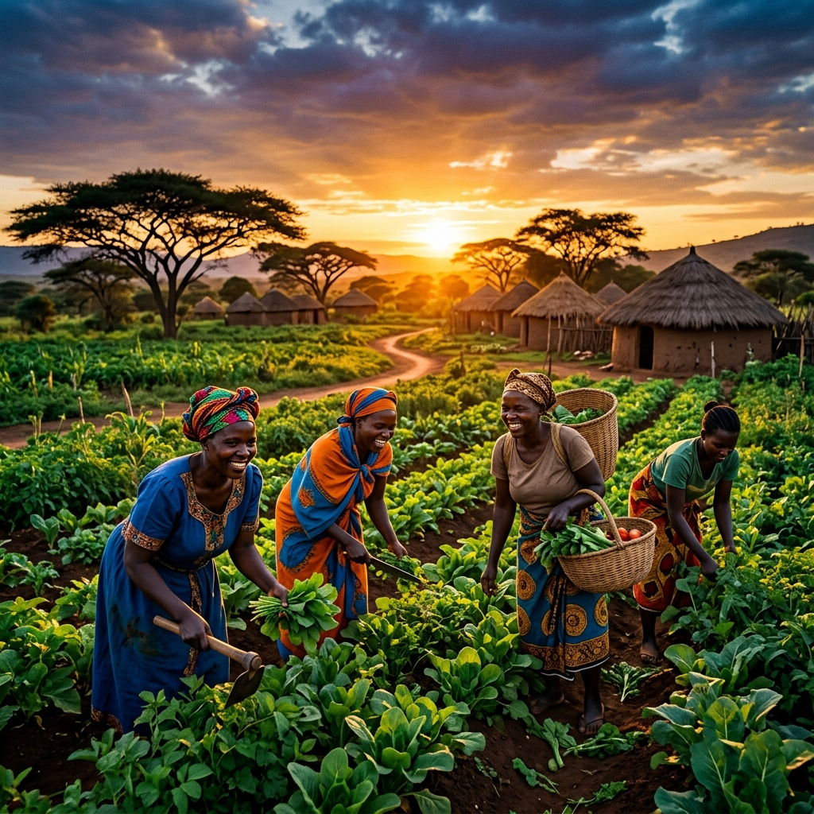

🌱
Empowering Ghanaian Agriculture
Interactive mapping, satellite crop tracking, climate analytics, and AI advisor localized in English, Akan (Twi), and Ewe.
Our Resources
Weather & Soil Health
6-hour cached forecasts, soil moisture, and transpiration curves.
➔Satellite Crop Health
Sentinel Hub NDVI vegetative indices and seasonal curves.
➔National Yield Benchmarks
FAOSTAT crop statistics and local yield comparisons.
➔AI Farm Advisor
Instant agri advice in English, Twi, and Ewe with farm context.
➔